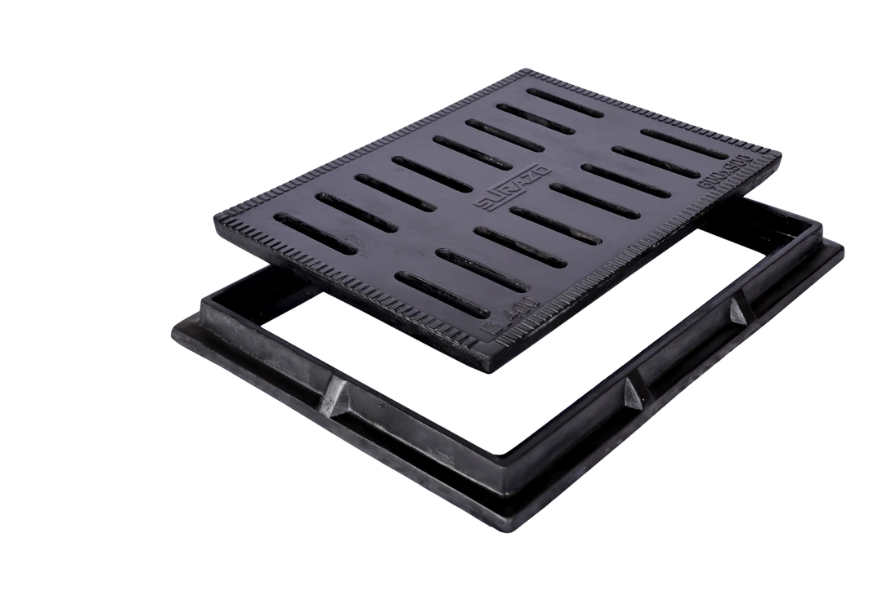
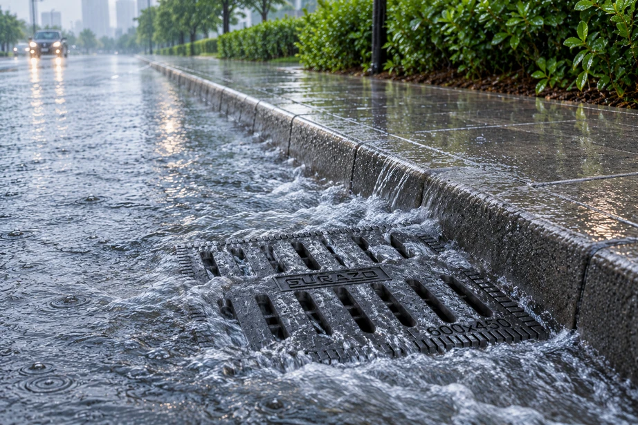

C250
600 × 450 mm
Rectangular FRP grating
A slotted rectangular grating and frame for surface-water entry into a drainage system.
Enquire about this size
Slotted gully covers allow surface water to enter the drainage system while the matching frame supports the cover. The Surazo brochure describes durable construction, efficient drainage and straightforward installation.
View sizes & load classes ↓Explore the listed options for this product. Select a size to include it in your enquiry.
Sizes and classes are taken from the supplied product catalogue listings. Photos illustrate the product family; dimensions, frame details, availability and suitability must be confirmed for the selected option.
See the brochure size markings alongside the actual product.
The gully cover pictured on page 6 carries a 600 × 600 size marking.
Arrows identify the size marking shown in the brochure. The product is photographed in perspective and is not shown at actual scale.
Illustrative guide, not a manufacturing drawing. The brochure does not establish whether the moulded size marking is the cover’s outer size or the clear opening; confirm all installation dimensions before ordering.
For surface-water drainage points and drainage runs. Share the opening dimensions, drainage layout and installation conditions to confirm the required cover and frame.
Confirm the clear opening or required size, matching frame, load class and quantity. Custom sizes and load classes are available on request; our team can confirm availability, pricing and lead time.
Discuss your requirements →
Fiber Reinforced Polymer combines fiberglass reinforcement, a polymer resin binder and a mineral-filled core. The brochure describes a textured surface and UV-stable coating.
Explore the layers →The brochure lists manufacture up to D400. Confirm the class and supporting documentation for your selected dimensions and installation; total vehicle weight alone does not determine suitability.
View load options →Match the frame opening to the chamber. Fully support the frame on the specified concrete bed and align the top with the finished surface.
Installation guide →Share the size, application and quantity. We’ll help confirm the right fit.